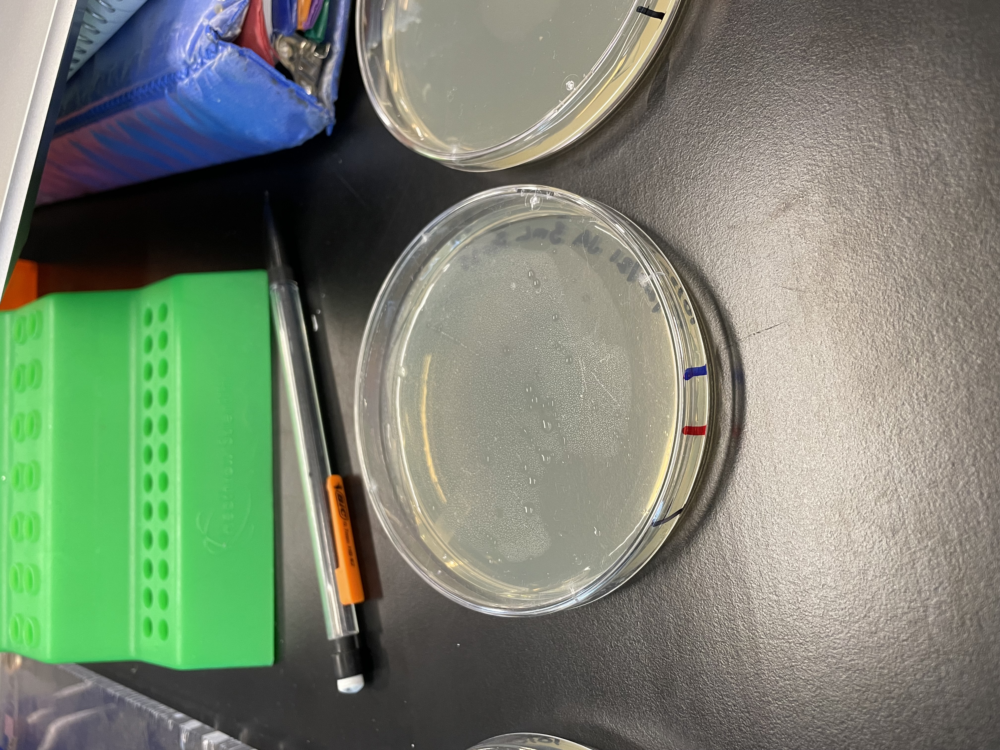
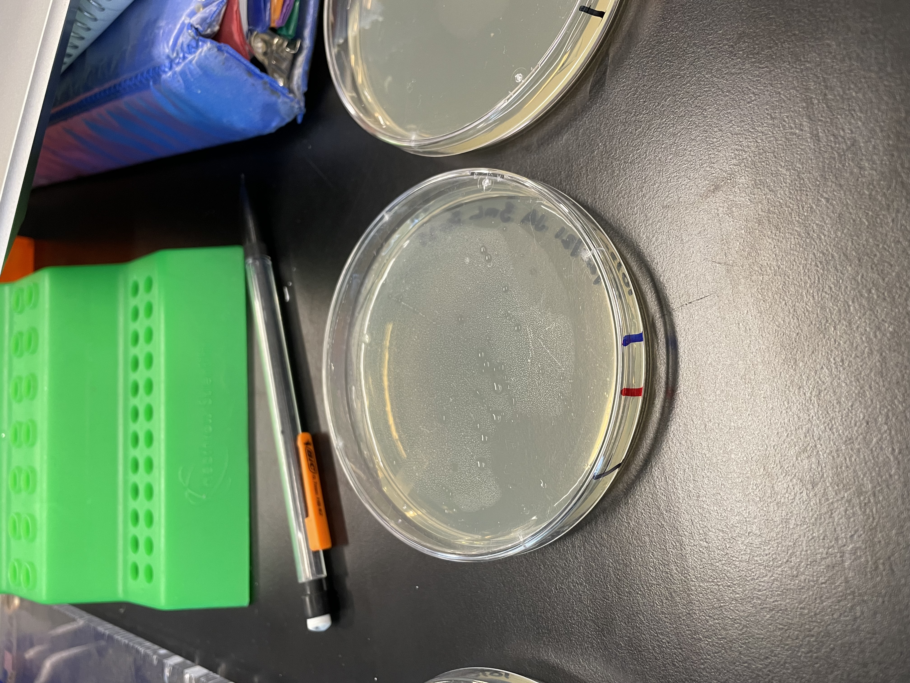
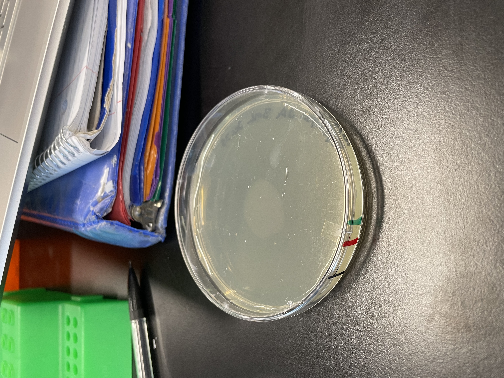
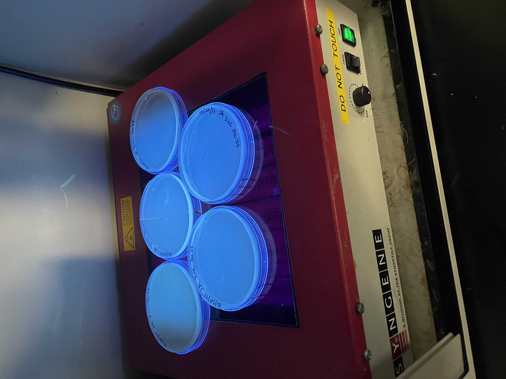
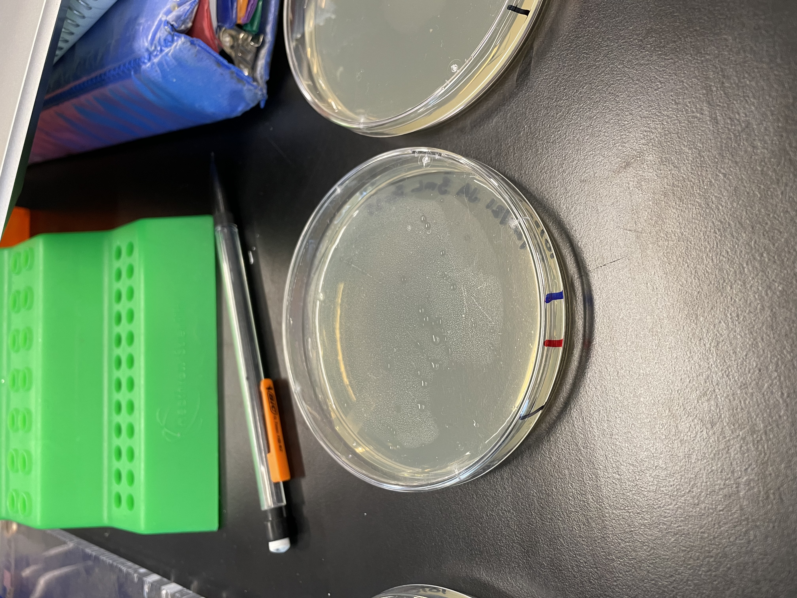
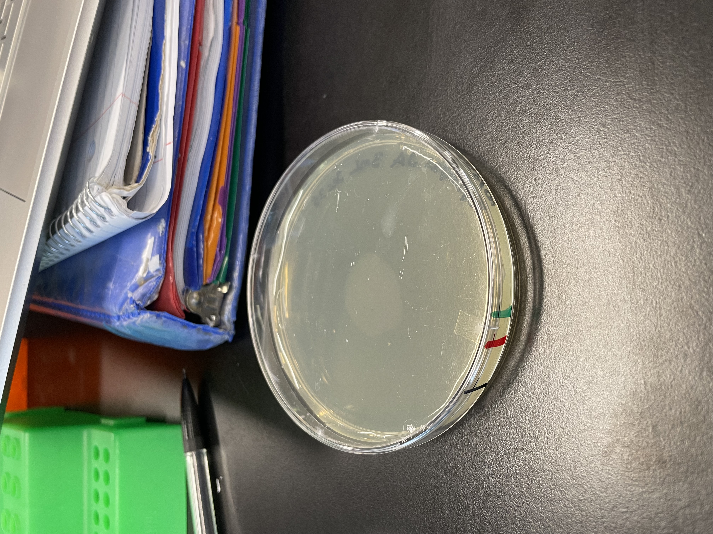
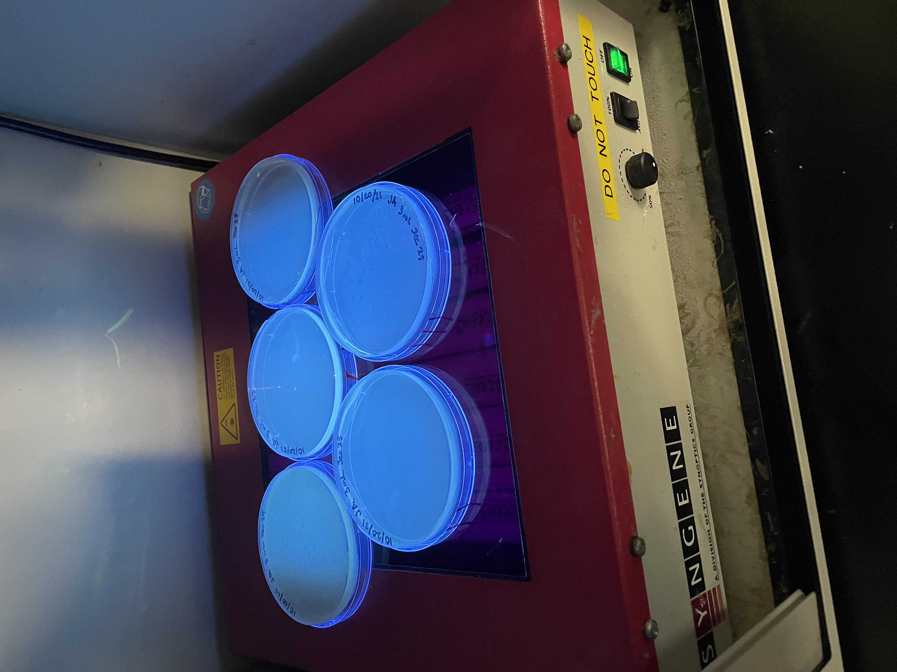

John Doe
My name is Jaden Aquino and I am currently a Biology major at the University of Califronia Riverside. In the pasat I have had expereinces in a multitude of professional positions. These include being a serverr, a resident advisor, and a porgram advisor. In these positions I have learned a great deal of skills and traits. Some of these skills include talking to people, time management and others.
In addition I also have expereince in playing basketball. Basketball is a team sport that requires a great deal of communication to be successful. There are five players on the court at a time and everyone must be on the same page to ensure that the game is won. To ensure that games were being won, I worked on my communication skills and being understanding of others. I tried my best to put myself in their shoes and understand what they were feeling and tried to see their perspective on things
Currently I am a Biology Major at the University of California Riverside where I hope to one day become an optometrist. I really enjoy looking at eyes and it seems like an intriguing profession to pursue. It also seems to be very fulfilling and I am sure I will like it a lot
Experience
Resident Advisor
• Scheduled and planned hall meetings
• Speaker at hall meetings
• Duty Shifts
Cashier
• Took customers orders
• Worked with coworkers
• Helped with cleaning
•
Education
UC Riverside
University of California Riverside
University of California Riverside
Portfolio
 



 